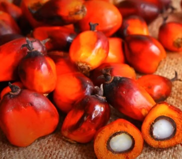

Nome Popular: Dendezeiro; Palmeira-dendem; coqueiro-de-dendê
Nome Científico: Elaesis Guineensis
Família Botânica: Palmae
Característica do fruto: O dendê se apresenta como um fruto oval, liso, duro e brilhante, do tamanho de uma azeitona pequena, nasce em cachos, na cor preta e quando está maduro alcança uma cor que varia entre o amarelo forte, o alaranjado e o vermelho rosado. O dendê possui uma semente com um pequeno caroço negro, que ocupa totalmente o fruto, no interior do qual encontra-se um coquinho esbranquiçado.


Característica do fruto: O dendê se apresenta como um fruto oval, liso, duro e brilhante, do tamanho de uma azeitona pequena, nasce em cachos, na cor preta e quando está maduro alcança uma cor que varia entre o amarelo forte, o alaranjado e o vermelho rosado. O dendê possui uma semente com um pequeno caroço negro, que ocupa totalmente o fruto, no interior do qual encontra-se um coquinho esbranquiçado.
Devido as condições necessárias em relação ao clima, temperatura, solo, entre outras. O estado da Bahia tem apdidão natural para o cultivo, especialmente o baixo sul (Valença, Taperoá, Nilo Peçanha, Ituberá e Camamu). O estado dispõe de mais de 700 mil hectares propícios para a dendeicultura, área que se estende desde a Região Metropolitana de Salvador até o extremo sul, caracterizada por relevos favoráveis à mecanização. Possui clima adequado, com pluviosidade anual entre 1.600 e 1.800 milímetros, temperatura média superior a 23º e luminosidade acima de 2 mil horas por ano.